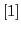
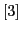
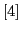
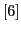

In the present work the linearized discrete compressible Euler equations are investigated. These equations are of importance for evaluation of solution derivatives, a posteriori error estimation, and frequency-domain methods for periodic flows. Moreover, their solution can be considered as a preliminary step towards developing algorithms for the non-linear equations. We focus on solution of 2nd-order accurate finite volume discretizations built on unstructured grids with either upwind or central convective fluxes. The goal is to reduce the CPU time required to obtain steady-state convergence for these given discretizations.
Nowadays, such problems are typically solved with geometric multigrid methods, employing either explicit Runge-Kutta or an approximate implicit scheme as a smoother. Despite the investigation of many variations on this theme over the years there has been a continued lack of success in obtaining satisfactory convergence for all but the simplest geometries. The situation is even worse for unstructured discretizations, where the additional complexity of definition of a proper coarse grid hierarchy arises.
In this work defect correction [1, 2] is applied to solve the linear problem. Defect correction allows by-passing direct solution of the 2nd-order accurate discretization, instead, a sequence of problems with a 1st-order discretization on the left-hand side is solved. On this better conditioned problems we apply AMG.
Since algebraic multigrid [4, 5, 6] does not rely on the geometry of the grid, it is an attractive alternative to geometric multigrid for problems discretized on unstructured grids. However, initially developed for scalar elliptic PDEs, algebraic multigrid needs special extensions to be applicable to systems of PDEs, one of those extensions being a point-based approach. The point-based AMG solver, implemented in the SAMG package [3], was investigated in this work. The solver, applied together with accelerator BiCGStab, proved to be very efficient for solution of the 1st-order accurate discretizations considered here in sub-, tran- and super-sonic flow regimes. One should mention that our attempts to apply AMG directly to 2nd-order discretizations were not much successful so far.
The defect correction approach combined with the AMG solver was applied
to solve 2nd-order accurate
discretizations and was seen to significantly out-perform the geometric
multigrid solver [7, 8]
in terms of CPU time for all flow regimes. This is mainly by virtue of
the efficency of AMG, which requires
very few iterations to give sufficient accuracy of the inner problem at
each defect correction step.
Furthermore, as the 1st-order matrix is constant, only one AMG setup
phase must be performed for
the entire calculation.
Bibliography
 K. Boehmer, P. Hemker, B. Van Leer, The defect correction approach,
Computing Suppl., 5,
1984.
B. Koren, Multigrid and defect correction for the steady
Navier-Stokes equations, J. Comput.
Phys. (ISSN 0021-9991), vol. 87, 1990, pp. 25-46.
 K. Stueben, T. Clees, SAMG User’s Manual, Fraunhofer Institute SCAI,
http://www.scai.fraunhofer.de/samg.
 A. Brandt, S.F. McCormick, J. Ruge, Algebraic multigrid (AMG) for
sparse matrix equations,
Sparsity and its Applications, D.J. Evans (ed.), Cambridge University
Press, Cambridge, 1984,
pp. 257-284.
J.W. Ruge, K. Stueben, Algebraic Multigrid (AMG) , in “Multigrid
Methods” (McCormick,
S.F., ed.), SIAM, Frontiers in Appl. Math., Vol. 5, Philadelphia, 1986.
 K. Stueben, Algebraic Multigrid (AMG): An Introduction with
Applications, GMD Report 70,
Nov. 1999.
D. Schwamborn, T. Gerhold, R. Heinrich, The DLR TAU-Code: Recent Applications in
Research and Industry, in P. Wesseling, E. Onate and J. Periaux (eds) European Conference
on Computational Fluid Dynamics. ECCOMAS CFD 2006.
R. Dwight, J. Brezillon Efficient and Robust Algorithms for Solution of the Adjoint
Compressible Navier-Stokes Equations with Applications, Int. J. Num. Meth. Fluids, DOI:
10.1002/fld.1894, 2008.